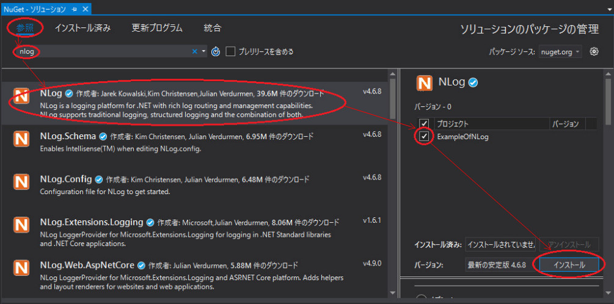
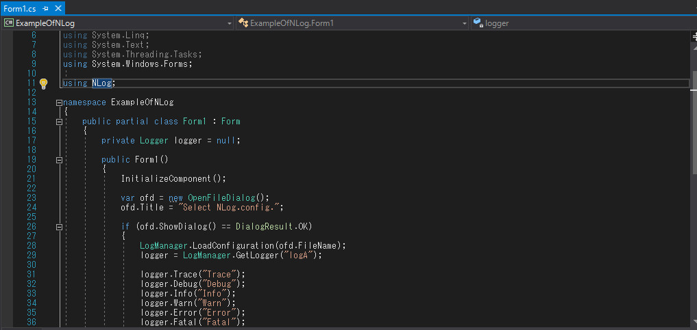
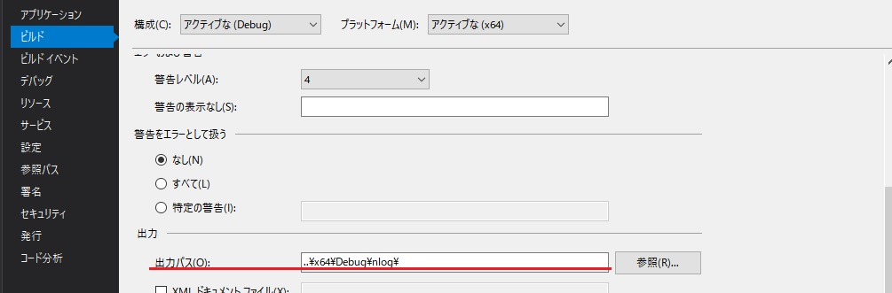
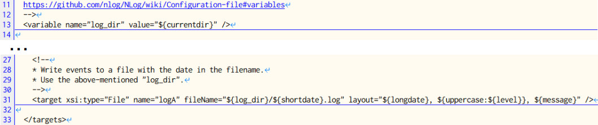
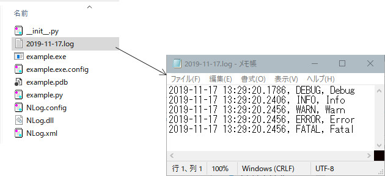
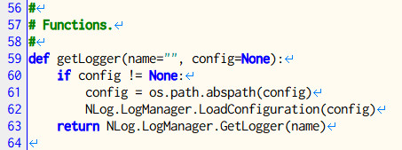
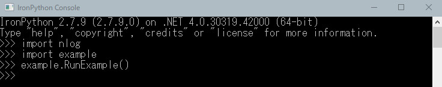

13th August 2022 at 3:36pm
NLogについて
NLogは、.NETプラットフォーム向けの柔軟で無料のロギングプラットフォームです。
特徴は、
- Configurationファイルとプログラム(API)を使用して簡単に構成できます
- ログメッセージはさまざまなレイアウトで出力可能です
- 構造化ログへ対応しています
IronPythonにもloggingというライブラリがあります。こちらも手軽で便利ですが、NLogの方がより高機能です。
IronPythonから利用するための手順
IronPythonからC#のライブラリを利用する の手順で行いますが、プログラミングを一から説明するとややこしいので、こちら のサンプルを使ってポイントを説明します。
- 新規にプロジェクトを作成します。
（上のサンプルを使う場合は不要です。)
- NugetでNLogをインストールします。


- 簡単なプログラムを作成します。
- 上のサンプルでは「Form1.cs」に簡易なテストプログラムを書いています。
 - 後でIronPythonのライブラリにしたいので、出力パスを
..\x64\[Release or Debug]\nlog\にしています。「ExampleOfNLog」プロジェクトのプロパティを確認してください。

- ビルドして動作を確認します。
- 上のサンプルではConfigurationファイルの選択を促されるので、実行ファイルと同フォルダにある
NLog.configを選択してください。 NLog.configの13行目と31行目で以下のように設定しているので、作業フォルダにログが出力されます。

NLog.configの記述方法については、こちらを参考にしてください。英語ですが、Chromeの翻訳機能などを使えばだいたい理解できます。
__ini__.pyを作成します。私の作ったファイルが、実行ファイルと同フォルダにある同じフォルダに入っていますので参考にしてください。- 面倒くさいのは、パスを通す設定と参照設定です。上のサンプルの
__ini__.pyにおいて8割方がそうです。 - 後は、Configurationファイルに従ってログのクラスを生成する関数だけ準備しています。
 - NLogはかなり使いやすいライブラリです。それでも、IronPythonから使う場合にはラッピングしてやらないと使えません。是非、自分なりのライブラリを作ってみてください。
- 最後にReleaseでビルドし、生成された
nlogフォルダ（実行ファイルのあるフォルダ）を、IronPythonのLibフォルダにコピーします。 - 上のサンプルにおいては、
example.pyも用意しています。IronPythonのコンソールを起動し、以下のスクリプトを実行すればログがnlogフォルダ出力されます。

環境変数パスIRONPYTHON_HOMEの設定を忘れないようにしてください。（例：C:\IronPython27）
ひとこと
手間はかかりますが、完成してしまえばスクリプト上で実行できます。なかなか便利です。